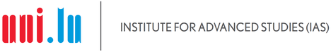

The creation of scientific knowledge across disciplines grows and increasingly spreads globally. However, we know less about how scientific breakthroughs diffuse and reshape (multi)disciplinary fields, ultimately impacting society at large.
The goal of the proposed two-day workshop is to create a research network of international experts and established and emerging UL researchers from different disciplines and faculties to generate knowledge in a novel field: the study of scientization -- or how prior scientific knowledge influences subsequent patterns of diffusion, knowledge transfer, and new scientific subfields.
By uniquely combining theories from sociology of science, classic bibliometric key performance indicators, and big data to analyze scientific information (e.g. data mining and network analysis from computer science, statistical mechanics) we will lay the foundation for novel research on the underlying structure, dynamics, and consequences of scientization. Where they overlap is the intellectual, interdisciplinary space of the study of scientization. SEEDS will develop a study design able to test hypotheses about scientization and its consequences.
TBA
TBA
For any further information about the SEEDS 2023 workshop, plase contact the workshop ogranisers Dr. Jennifer Dusdal and Prof. Dr. Jun Pang.
|  |